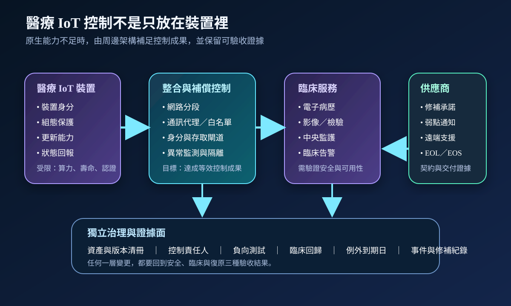
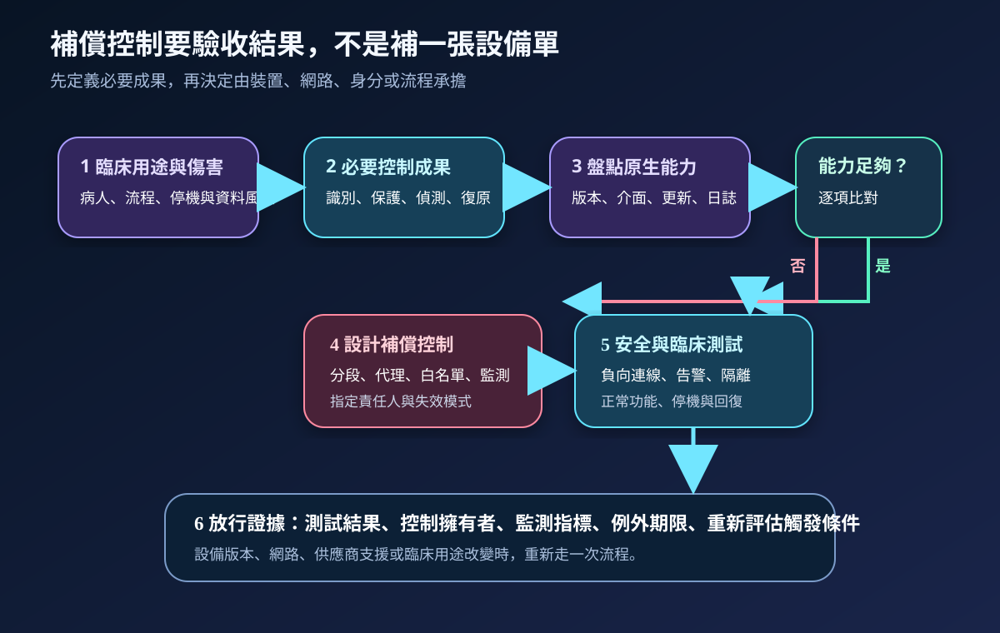
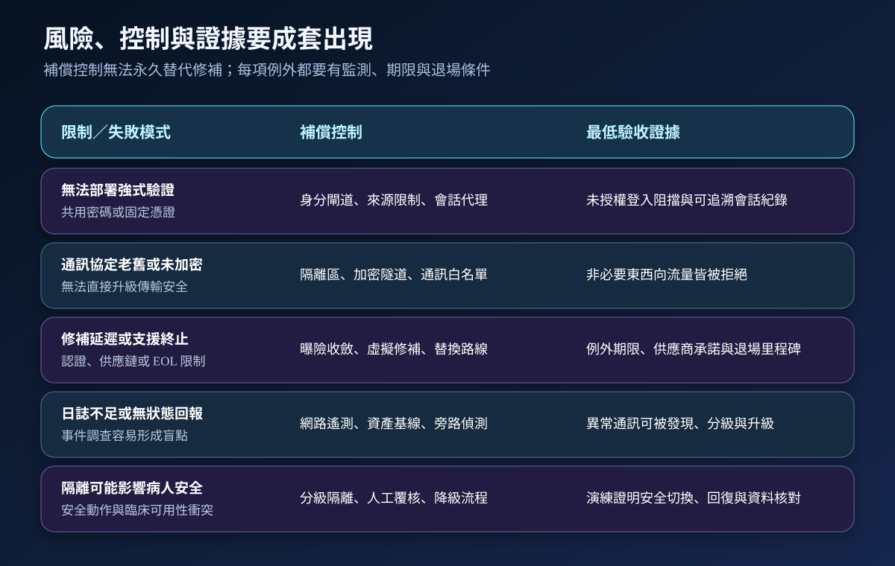

醫療資安國際觀察 · 2026-10-02
醫療 IoT 無法套用標準控制時怎麼驗收：從裝置能力到補償控制
作者：Dr. William｜醫療資訊與資安治理實務工作者
醫療 IoT 受算力、電力、認證、設備壽命與病人安全限制，未必能直接部署完整 IT 控制。治理重點不是降低要求，而是明確分配控制責任，證明替代作法達到必要的安全與臨床成果。
名詞解釋：補償控制要達到等效成果
原生能力是裝置本身提供的身分、組態保護、資料保護、介面限制、更新與狀態回報。補償控制是在原生能力不足時，由網路分段、通訊代理、身分閘道、白名單、旁路監測、人工覆核或臨床降級流程降低風險。它不是永久豁免；仍須指定責任人、監測指標、例外期限與退場條件。
國際現況與適用邊界
NIST 於 2026 年 6 月發布 IoT 工作坊摘要，指出受資源限制的 IoT／OT 裝置可能無法直接套用傳統 IT 控制，需要情境化評估與替代控制；安全整合也涉及供應鏈透明度、韌性、復原與生命週期責任。該文件是工作坊成果與未來方向，不是醫院強制標準。
NIST 又於 2026 年 8 月 31 日徵詢 SP 800-213A 修訂意見，聚焦 IoT 產品資安能力清冊及需求集的表達與使用，意見徵集至 2026 年 10 月 15 日。這顯示採購與整合需要把抽象要求轉成可由供應商回答、可由使用機構驗收的能力陳述。
美國 FDA 的醫療器材資安資料則處理美國醫療器材法規與製造商上市前、上市後責任。相關要求不直接等同台灣醫療機構義務；台灣醫院可參考其產品生命週期、弱點管理與透明度思路，實際要求仍須依台灣法規、主管機關公告、採購契約與病人安全評估決定。
適用原則：NIST 文件可用來設計能力清冊與驗收方法，FDA 資料可用來理解產品端責任；兩者都不能直接改寫成台灣醫院的法定控制清單。
規劃：先定義控制成果，再討論產品功能
範圍應涵蓋裝置、連線模組、整合閘道、雲端服務、遠端維護、臨床接收端、日誌及備援流程。每個使用情境先辨識病人傷害、資料外洩、錯誤告警、服務中斷與復原失敗，再形成必要控制成果。驗收指標可包含已識別裝置比例、未授權連線阻擋率、關鍵事件可觀測率、隔離決策時間、修補或補償控制完成時間、臨床回歸成功率及逾期例外數。

實作：六步完成整合放行
- 建立情境：記錄設備用途、資料流、操作者、外部連線、停機容忍度與可能傷害。
- 形成需求集：把識別、保護、偵測、回應與復原成果寫成可測試條件，不只列產品名稱。
- 比對能力：向供應商取得版本、介面、更新、日誌、弱點通知、遠端維護及 EOL／EOS 證據。
- 配置補償控制：針對能力缺口設計分段、代理、白名單、旁路監測或人工確認，並記錄失效模式。
- 雙軌驗收：同時執行未授權連線、異常行為、隔離與復原測試，以及正常功能、告警、資料完整與臨床回歸。
- 持續治理：設備版本、網路、供應商支援、用途或威脅改變時，重新評估需求與例外。
風險：補償控制最容易失效在邊界
常見問題包括只做 VLAN 卻未驗證禁止路徑、遠端維護繞過身分閘道、日誌留在設備內無法集中、虛擬修補沒有到期日、供應商支援終止後仍無替換計畫，以及自動隔離未評估病人安全。補償控制應與原生修補、替換路線和臨床降級共同管理。

可執行清單
- 是否已把裝置本體、閘道、雲端、遠端維護與臨床接收端畫在同一張資料流圖？
- 需求是否描述可驗收成果，而不是只寫「符合資安規範」？
- 供應商是否交付版本、介面、更新、弱點通知、日誌及支援期限資料？
- 原生能力不足時，是否指定補償控制、責任人、監測指標與失效模式？
- 是否完成禁止連線、憑證失效、異常流量、設備離線及復原的負向測試？
- 安全控制變更後，是否重新驗證告警、資料完整、臨床功能與病人安全？
- 例外是否有到期日、退場條件及院級風險接受紀錄？
來源
- NIST｜Workshop Summary Report for the Cybersecurity of IoT Workshop: Future Directions（發布：2026-06-17；查閱：2026-10-02）
- NIST CSRC｜Pre-Draft Call for Comments: NIST SP 800-213A Rev. 1（發布：2026-08-31；意見截止：2026-10-15；查閱：2026-10-02）
- U.S. FDA｜Cybersecurity（頁面更新：2025-08-12；查閱：2026-10-02）
內容說明
本文依健康台灣深耕計畫相關治理內容整理，並參考 NIST 與 FDA 公開資料，提出醫療 IoT 的控制分配、補償控制、整合測試與放行證據框架；不把美國法規、NIST 徵詢內容或工作坊方向視為台灣法定義務，也不取代主管機關公告、法律意見、院內政策、醫療器材管理要求或個案病人安全評估。